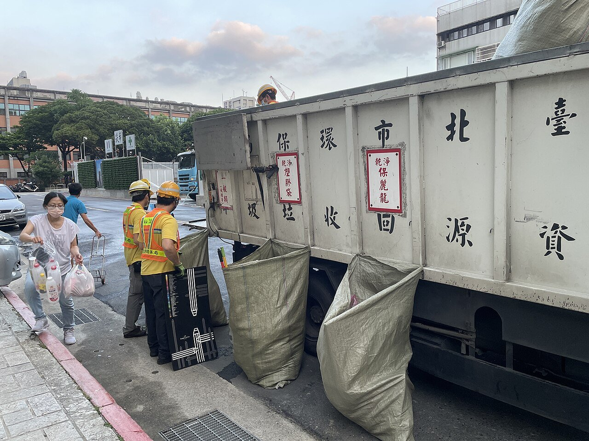

🚛 垃圾車時間查詢
垃圾車沒有全國統一的查詢系統——每個縣市（甚至每個鄉鎮）都有自己的清運路線與時間，由各縣市環保局或公所管理。這一頁把主要縣市的官方查詢方式整理在一起，照你住的縣市對號入座。

主要縣市官方查詢方式
| 縣市 | 官方查詢方式 | 可以查到什麼 |
|---|---|---|
| 新北市 | 「新北樂圾車」官方網站 | 清運路線、垃圾車即時動態、定點收運地點與時間 |
| 台北市 | 台北市環保局網站清運資訊 | 各區收運時間與地點；另有 30 處限時定點收受點，錯過垃圾車可改去定點 |
| 基隆市 | 「基隆垃圾車來了」查詢系統 | 垃圾車即時位置與預估到點時間 |
| 桃園市 | 「桃園垃圾車」App／桃園市環境管理處公告 | 沿線收運時間；週三、週日為清潔隊例休（各區以公告為準） |
| 台中市 | 台中市環保局「垃圾清運大車隊」即時查詢 | 清運路線即時位置與收運時間 |
| 其他縣市 | 各縣市環保局或鄉鎮市公所網站 | 多數公所會公布每週清運日程表（PDF 或公告頁），搜尋「你的鄉鎮＋垃圾車時間」通常第一筆就是官方頁 |
連假與颱風天，清運最容易變動
平常的收運時間相對固定，但遇到連續假期、颱風停班停課，清運安排幾乎每次都會調整：有的縣市停收、有的改成夜間收運、有的加班收運，各縣市都不同，而且常常當天才公告。出門倒垃圾前，記得先看一次縣市環保局的最新公告，不要用平常的時間表推測。
舉例：2026 年 10 月 24 日颱風停班停課當天，台中市全日停收、台北市晚間恢復正常收運、新北市午後加班收運——同一天三個城市三種安排，這就是為什麼要以官方公告為準。（資料來源：各縣市環保局當日公告）